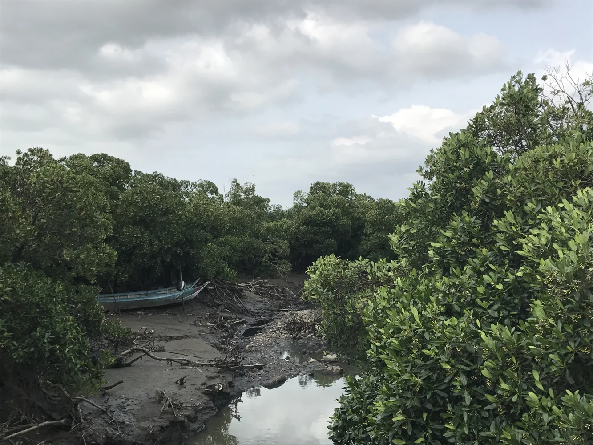
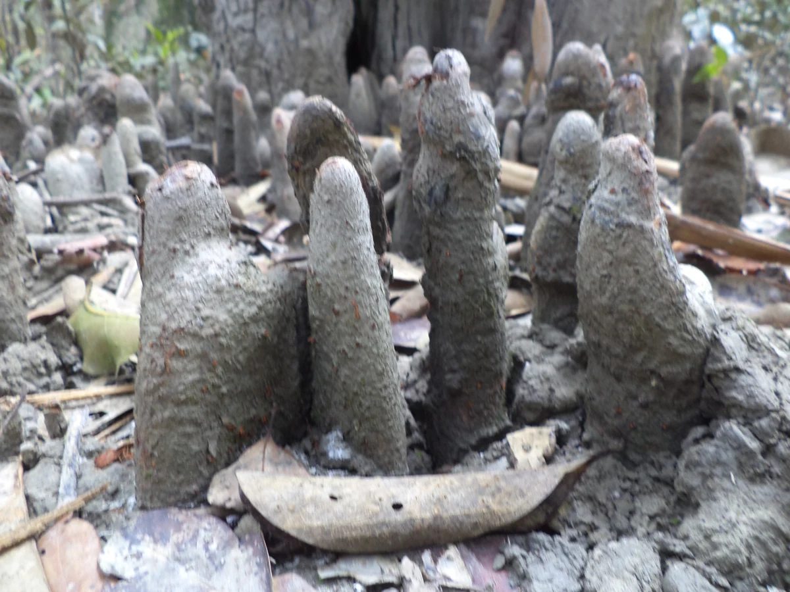
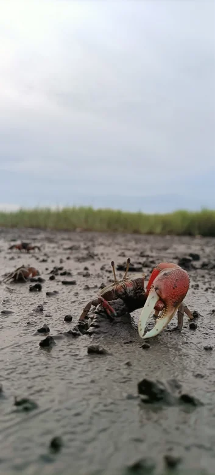

紅樹林的根，為什麼有些會伸出泥地？
河口濕地
河水進入海口，潮水會反覆淹過泥灘。泥巴常被水泡著，氧氣難以進入深處，有些紅樹林植物便把根長往空氣的方向。

Pieceofr · CC BY-SA 4.0 · 本站縮圖

海茄苳靠冒出泥面的根換氣
在台江的泥灘，可以看到海茄苳周圍有許多棒狀突起。它們是呼吸根，也就是伸出泥面的根。露出水面時，根可以和空氣交換氣體，讓氧氣到達埋在泥裡的部分。


水筆仔的幼苗在枝上就開始長
以淡水河常見的水筆仔來說，胚在果實還掛在母株上時就開始伸長，形成細長的胎生苗。它落下後可能落在附近的泥灘，也可能被潮水帶往別處。
落葉也會進入河口的食物網
紅樹林落葉和其他有機物在水裡、泥裡逐漸碎裂並被微生物分解。泥灘上的小動物能利用其中一部分，再成為魚或水鳥的食物。
紅樹林與水道邊
細泥長時間含水，根部要在缺氧、有鹽分的環境中生長。
植物淡水河口有大片水筆仔；台江常見的海茄苳，會從泥地冒出細棒狀的呼吸根。
動物林緣與排水水道附近的泥面，有時可以看到彈塗魚短暫離水，在泥灘上移動。
開闊泥灘與淺水區
退潮露出泥面，水道與低處還留有水。人從堤岸遠看，也有機會辨認不同動物的位置。
泥面上的動物招潮蟹會鑽進洞穴。許多種類的雄蟹有一隻特別大的螯，常是最容易看見的線索。
淺水中的鳥黑面琵鷺會到台江一帶的淺水區覓食，可以留意牠在水中左右掃動扁平的喙。

Nicknss321 · CC BY-SA 4.0 · 本站縮圖

想一想
找泥面的小洞、動物留下的痕跡，再看淺水區的鳥。這幾種線索對應的地方不同，常能在同一個河口一起看到。
退潮時，觀察海茄苳，泥面上會看得到什麼？
可以找樹周圍直立、細棒狀的呼吸根。水筆仔枝上垂下的細長結構，則可能是胎生苗。